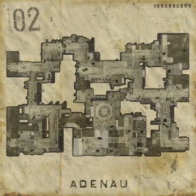

Date: March 9th, 1945
History:
Demoralized by the failed Ardennes Offensive, German troops are on their retreat through Adenau.
At the same time forward squads of the 4th Infantry Division make their way into the town to eliminate anti tank guns, allowing the armored divisions to continue their advance. With Adenau having been bomb shelled several nights before and the town almost left by most parts of the German resistance, it was supposed to be an easy mission.
But some Germans were still eager to stop the allied advance right here, take back Adenau and secure it before the armored divisions arrive.
Objectives:
Allies: Capture all strategic points in the town center of Adenau.
Axis: Secure the town center of Adenau and man the AT guns before the allied armor arrives.
Designed By: Daniel "Huri" Assmann
Thanks to:
Pedroleum (http://pedroleum.dod-federation.com)
Spine (http://www.texturehub.net)
for their custom models/textures